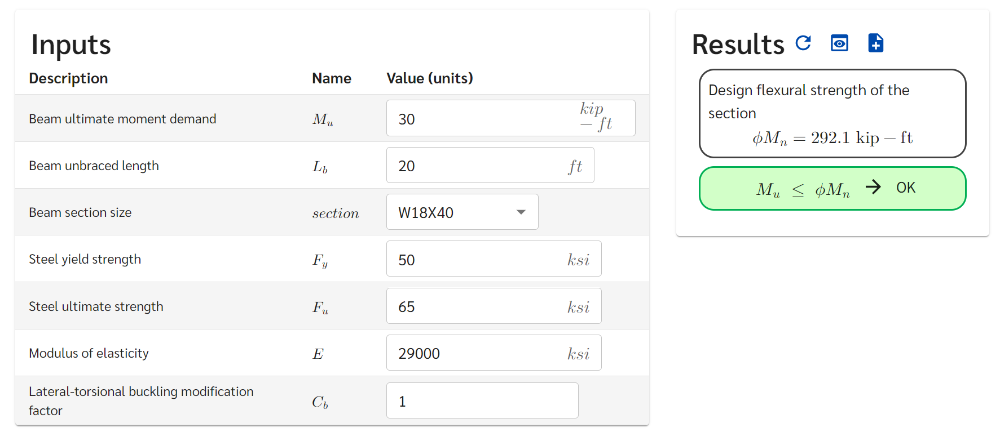

Example Calculation
This full example will display some of the more powerful features of efficalc templates that are displayed in Next Steps: Superpowered Features.
To explore the different elements we use here, you can copy and paste this code into your own template and modify it as you like.
Warning
Some aspects of this example may be using deprecated class and function names. For up-to-date examples, view the efficalc library examples: https://github.com/youandvern/efficalc/tree/main/examples
Design Portal
Calculation Report
Here is the complete Calculation Report for this example.
Complete Code
1from efficalc import *
2
3all_wf_sections = get_all_steel_section_sizes("WF")
4
5def calculation():
6 Title("Steel Beam Moment Strength")
7
8 TextBlock("Flexural strength of a steel wide-flange beam section.")
9
10 Heading("Assumptions", numbered=False)
11 Assumption("AISC 14th Edition controls design")
12 Assumption("Beam web is unstiffened")
13
14 Heading("Inputs", numbered=False)
15
16 Mu = Input("M_u", 30, "kip-ft", "Beam ultimate moment demand")
17 Lbu = Input("L_b", 20, "ft", "Beam unbraced length")
18
19 section = Input("section", "W18X40", description="Beam section size",
20 input_type="select", select_options=all_wf_sections[150:200])
21
22 Fy = Input("F_y", 50, "ksi", "Steel yield strength")
23 Fu = Input("F_u", 65, "ksi", "Steel ultimate strength")
24 Es = Input("E", 29000, "ksi", "Modulus of elasticity")
25
26 Cb = Input("C_b", 1.0, "", "Lateral-torsional buckling modification factor", reference="AISC F1(3)")
27
28 Heading("Section Properties", numbered=False)
29 section_properties = get_steel_section_properties("WF", section.get_value())
30 b = Calculation("b", section_properties.get("bf"), "in")
31 d = Calculation("d", section_properties.get("d"), "in")
32 Sx = Calculation("S_x", section_properties.get("Sx"), "in^3")
33 Zx = Calculation("Z_x", section_properties.get("Zx"), "in^3")
34 ry = Calculation("r_{y}", section_properties.get("ry"), "in")
35 rts = Calculation("r_{ts}", section_properties.get("rts"), "in")
36 J = Calculation("J", section_properties.get("J"), "in^4")
37 ho = Calculation("h_o", section_properties.get("ho"), "in")
38 bfl2tf = Calculation("b_f/2t_f", section_properties.get("bfl2tf"), "")
39 hltw = Calculation("h/t_w", section_properties.get("hltw"), "")
40
41
42 Heading("Beam Flexural Capacity", head_level=1)
43 Pb = Calculation("\phi_{b}", 0.9, "", "Flexural resistance factor", reference="AISC F1(1)")
44
45 Heading("Section Compactness", head_level=2)
46 ypf = Calculation("\lambda_{pf}", 0.38 * SQRT(E / Fy), "", reference="AISC Table B4.1b(10)")
47 Comparison(bfl2tf, "<=", ypf, true_message="CompactFlange", false_message="ERROR:NotCompactFlange", result_check=False)
48
49 ypw = Calculation("\lambda_{pw}", 3.76 * SQRT(E / Fy), "", reference="AISC Table B4.1b(15)")
50 Comparison(hltw, "<=", ypw, true_message="CompactWeb", false_message="ERROR:NotCompactWeb", result_check=False)
51
52 Heading("Plastic Moment Strength", head_level=2)
53 Mp = Calculation("M_{p}", Fy * Zx / ft_to_in, "kip-ft", "Nominal plastic moment strength",
54 reference="AISC Eq. F2-1")
55
56 Heading("Yielding Strength", head_level=2)
57 Mny = Calculation("M_{ny}", Mp, "kip-ft", reference="AISC Eq. F2-1")
58
59 Heading("Lateral-Torsional Buckling", head_level=2)
60 Lp = Calculation("L_{p}", 1.76 * ry * SQRT(E / Fy) / ft_to_in, "ft", reference="AISC Eq. F2-5")
61 cc = Calculation("c", 1.0, "", reference="AISC Eq. F2-8a")
62 Lr = Calculation("L_{r}", 1.95 * rts / ft_to_in * Es / (0.7 * Fy) * SQRT(
63 J * cc / (Sx * ho) + SQRT((J * cc / (Sx * ho)) ** 2 + 6.76 * (0.7 * Fy / E) ** 2)), "ft",
64 reference="AISC Eq. F2-6")
65
66 if Lbu.result() <= Lp.result():
67 ComparisonForced(Lbu, "<=", Lp)
68 Mnl = Calculation("M_{nltb}", Mp, "kip-ft", "The limit state of lateral-torsional buckling does not apply",
69 reference="AISC F2.2(a)")
70 elif Lbu.result() > Lr.result():
71 ComparisonForced(Lbu, ">", Lr)
72 Fcr = Calculation("F_{cr}", Cb * PI ** 2 * Es / (Lbu * ft_to_in / rts) ** 2 + SQRT(
73 1 + 0.078 * J * cc / (Sx * ho) * (Lbu * ft_to_in / rts) ** 2), "ksi", reference="AISC Eq. F2-4")
74 Mncr = Calculation("M_{ncr}", Fcr * Sx / ft_to_in, "kip-ft", reference="AISC F2.2(c)")
75 Mnl = Calculation("M_{nltb}", MIN(Mncr, Mp), "kip-ft", reference="AISC Eq. F2-3")
76 else:
77 ComparisonForced(Lp, "<", Lbu, "<=", Lr)
78 Mncr = Calculation("M_{ncr}",
79 Cb * BRACKETS(Mp - BRACKETS(Mp - 0.7 * Fy * Sx / ft_to_in) * (Lbu - Lp) / (Lr - Lp)),
80 "kip-ft", reference="AISC F2.2(b)")
81 Mnl = Calculation("M_{nltb}", MIN(Mncr, Mp), "kip-ft", reference="AISC Eq. F2-2")
82
83 Heading("Controlling Strength", head_level=2)
84 PMn = Calculation("\phi M_n", Pb * MIN(Mny, Mnl), "kip-ft", "Design flexural strength of the section", result_check=True)
85 Comparison(Mu, "<=", PMn)